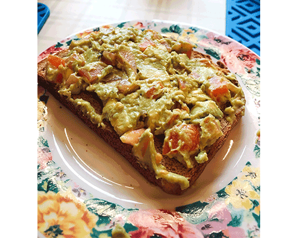
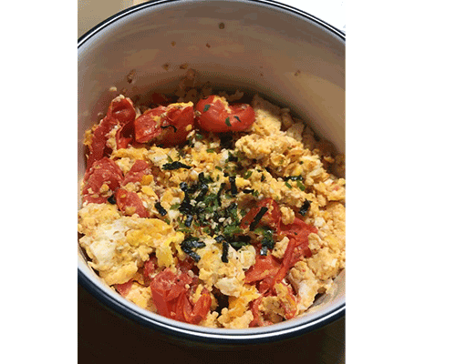

Breakfast
Avocado Toast
Ingredients
- 1/2 Avocado diced
- 1/4 Onion minced
- 1/4 Bell Pepper minced
- 1/4 Tomato diced
- Lime Juice
- Salt and Black Pepper
- Toast
Intructions
- First combine all ingredients except toast into a bowl and mash to desired consistency.
- Season it to your taste.
- Toast your slice of bread.
- Spread mixture onto toast.
- Enjoy!
Scrambled Eggs In Rice Cooker
Ingredients
- 2-3 eggs
- 1/4 Onion minced
- 1/2 Tomato diced
- 1-2 scallions, chopped
- 2 Tbs Ketchup
- 2 Tbs Oyster Sauce
- Salt and Black Pepper
- Sesame Seeds to garnish
Intructions
**Note: The follow recipe is cooked in a pan on a stove. However, this can be cooked in a rice cooker as well. Just leave it on cook mode and follow the same directions.
- Crack your eggs in a bowl, add a pinch of salt, beat the eggs.
- Heat up a pan on medium heat, oil pan, pour egg mixture into pan and scramble the eggs.
- Cook scrambled eggs until 80% done. Remove from pan and put eggs into a seperate bowl.
- Return pan to stove on medium high heat, oil pan.
- Sautee onions until transparent.
- Add tomatoes, scallions, ketchup, oyster sauce, and simmer until tomatoes release juice.
- Add the eggs back into the pan, reduce heat to low. Mix.
- Season to taste with salt and pepper.
- Remove from heat, and plate it.
- Enjoy!